Referência visual completa da navegação: cada área do menu com a tela real, o que ela faz e como o robô de automação é controlado por ela.
O menu lateral organiza a plataforma em 6 áreas, seguindo o ciclo de vida do conteúdo: ideia → pauta → geração → revisão → publicação → aprendizado. A área ativa fica destacada em preto; o trilho “Ciclo” no rodapé do menu mostra em que etapa do funil você está. No topo, o seletor de marca define o contexto: tudo o que você vê pertence à marca selecionada.
| Área | Sub-menus | Para quê |
|---|---|---|
| Início | — | O painel do dia: o que precisa de você agora |
| Conteúdo | Pautas · Ideias · Gerar | Alimentar a fila e criar as peças |
| Revisão & Agenda | Aprovações · Calendário | Decidir o que sai e quando |
| Publicação | — | Acompanhar falhas de envio e reenviar |
| Desempenho | Insights · Histórico | Ver o que funcionou e o que foi feito |
| Marca & Ajustes | Marca · IA · Conexões · Conta | Configurar tudo — inclusive o robô |
A primeira tela após o login e o ponto de retorno diário. Em vez de estatísticas decorativas, responde a uma pergunta: “o que precisa de você?”
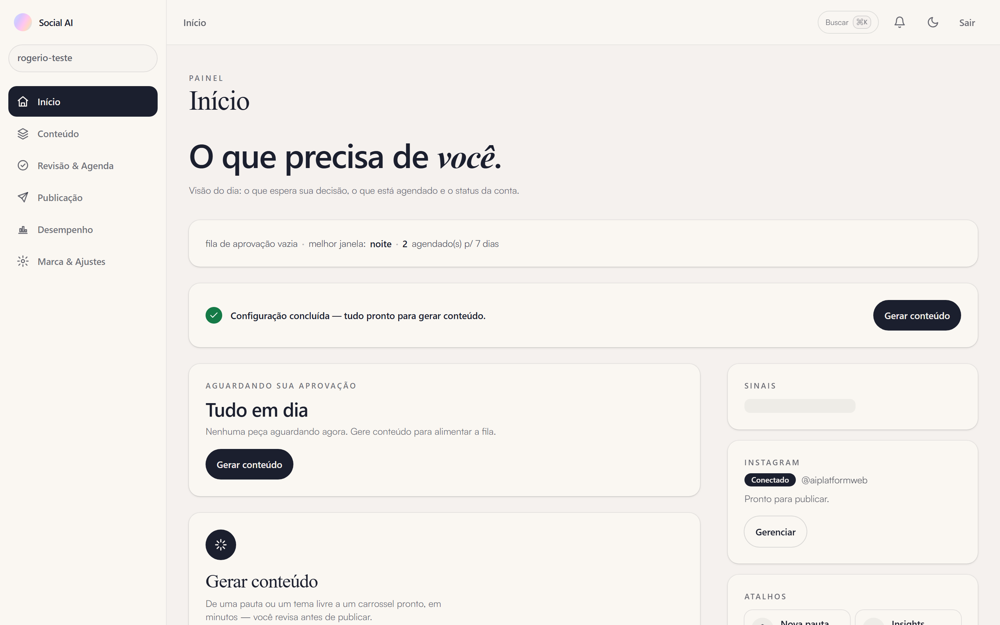
Figura 1. O painel do dia: resumo da fila, melhor janela de publicação, agendados da semana, status do Instagram e atalhos.
A área onde o material nasce, com três sub-menus na ordem natural: alimentar a fila (Pautas), avaliar sugestões do robô (Ideias) e criar as peças (Gerar).
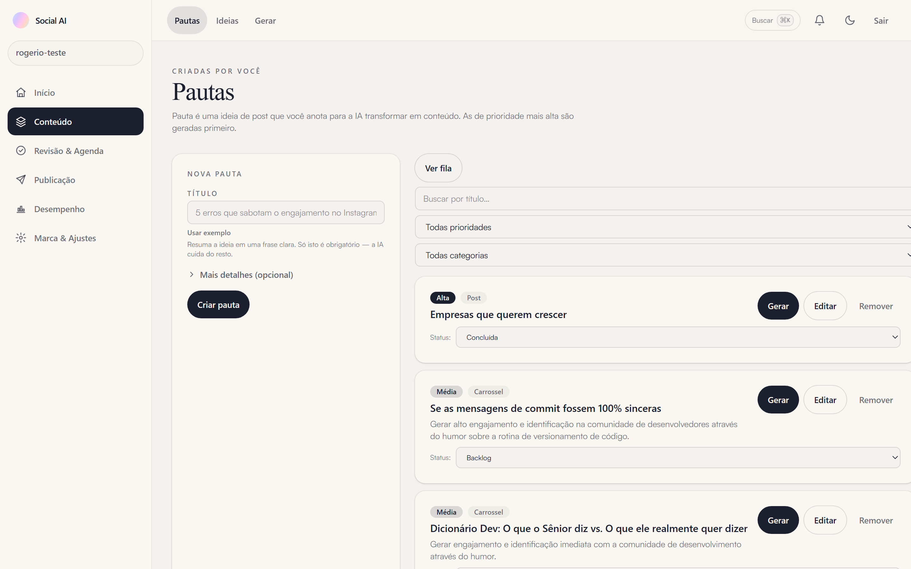
Figura 2. O backlog editorial da marca.
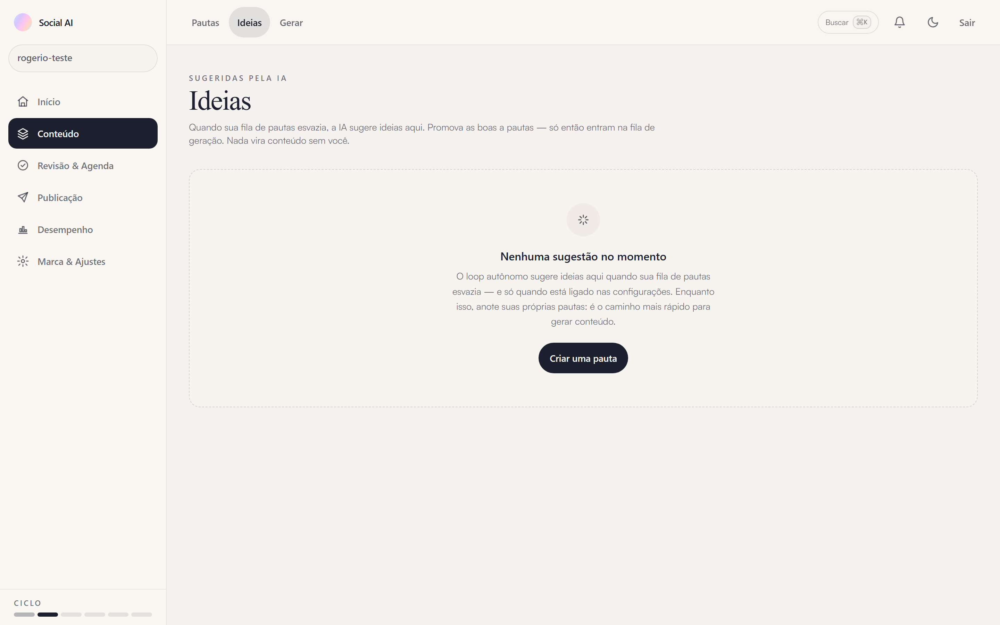
Figura 3. Sugestões do robô aguardando sua curadoria.
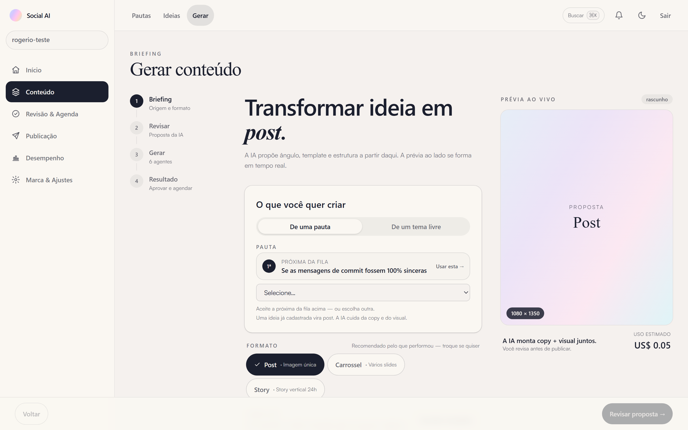
Figura 4. O assistente de criação — a mesma fábrica de 6 agentes que o robô usa, guiada por você.
O assistente percorre três momentos:
Escolha a pauta (ou escreva um tema na hora) e o formato — post único, carrossel ou story. Na seção Direção criativa você pode fixar: imagem de referência, fundo desejado, CTA e subtítulo. O botão “usar identidade do logo” estampa o logo da marca em todos os slides.
Você acompanha cada agente ao vivo: estrategista → arquiteto de narrativa → redator → compositor visual → gerador de imagem → validador de qualidade. Leva de 1 a 2 minutos — e o progresso é real, não uma animação.
A peça pronta com nota de qualidade (0–100), legenda e hashtags. Daqui você envia para aprovação — ou ajusta o briefing e gera de novo. Ao regenerar, a tela de comparação () mostra a versão anterior lado a lado com a nova.
Onde você decide o que sai e quando sai.
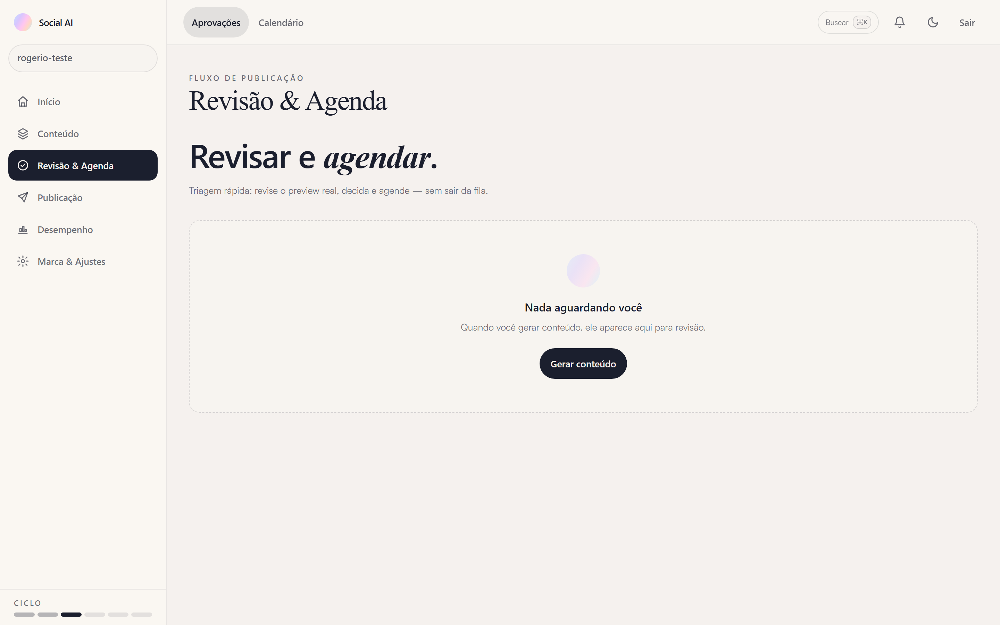
Figura 5. A fila de decisão — peças de menor nota primeiro.
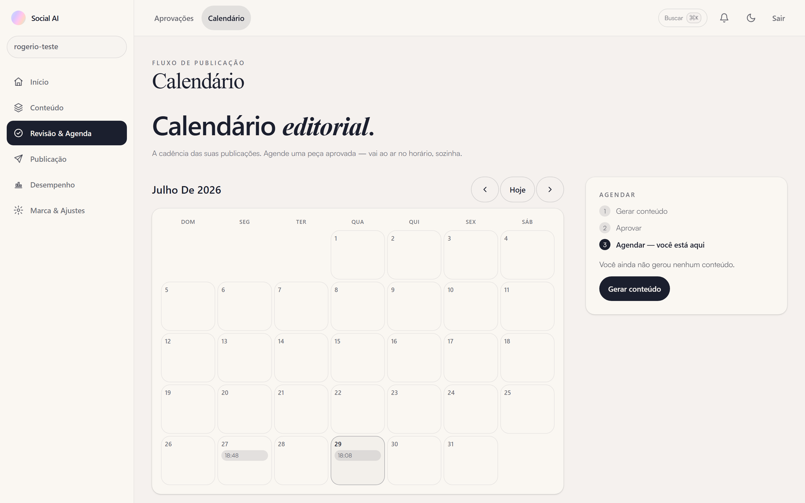
Figura 6. A visão mensal da presença da marca.
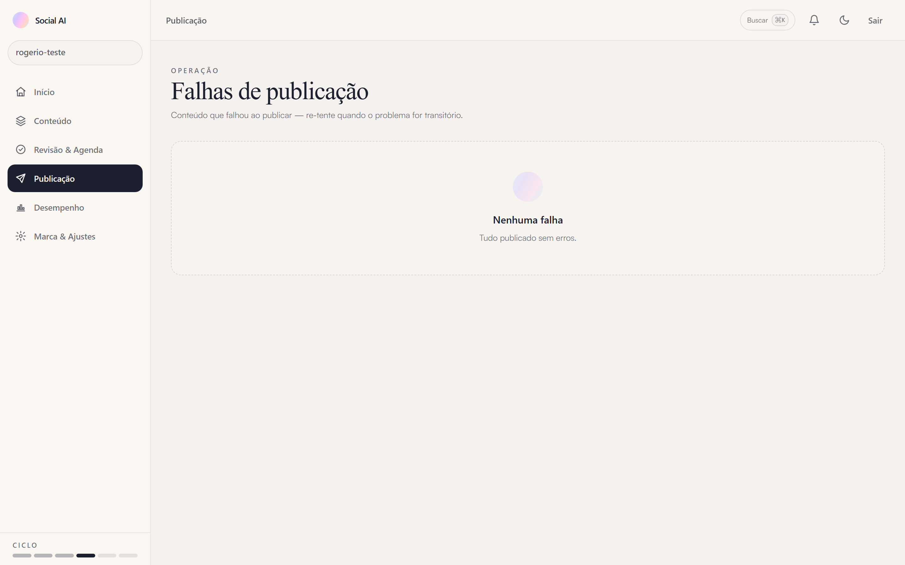
Figura 7. O raio-X dos envios ao Instagram — “Nenhuma falha” é o estado ideal.
O circuito de aprendizado: o que funcionou realimenta as próximas gerações.
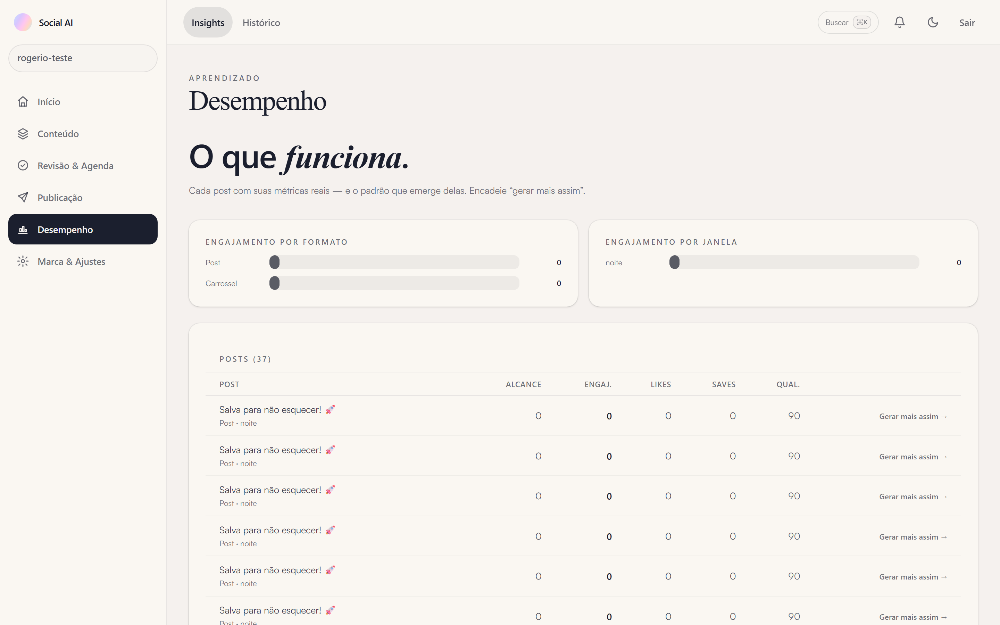
Figura 8. Os padrões aprendidos com as suas métricas.
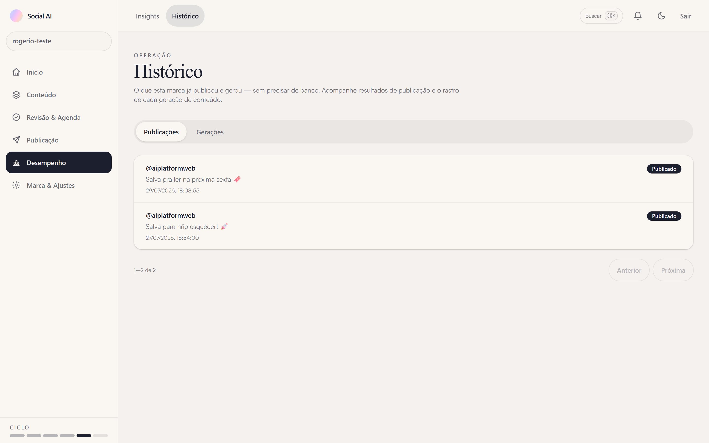
Figura 9. A linha do tempo completa da produção.
Todas as configurações, agrupadas em quatro famílias: Marca IA Conexões Conta. O painel do robô (Automação) ganhou a seção 7.
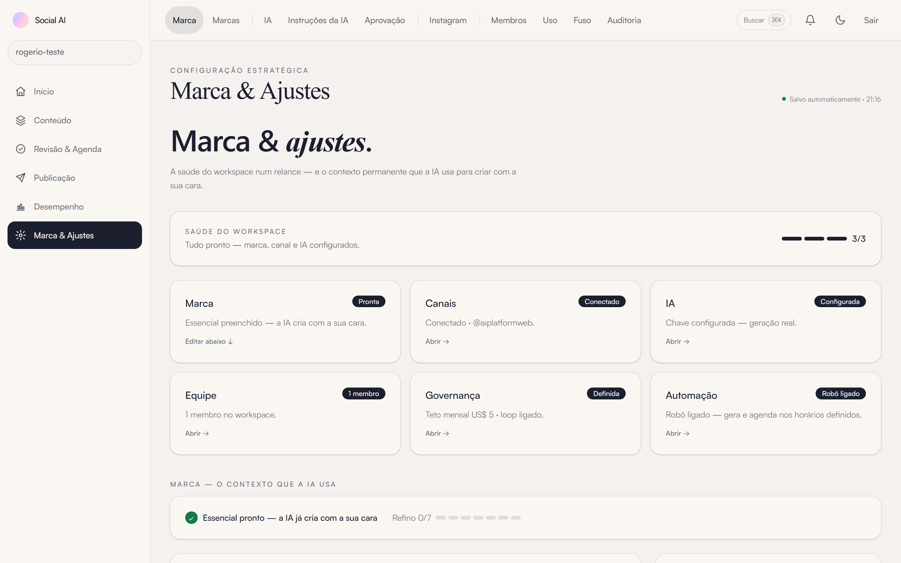
Figura 10. O coração estratégico — tudo aqui alimenta os agentes de IA.
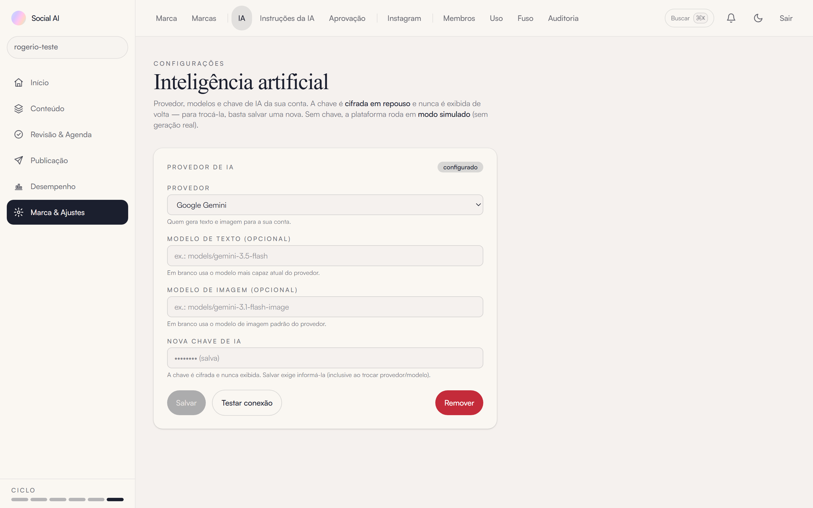
Figura 11. Quem escreve e quem desenha: provedores e chaves (guardadas cifradas).
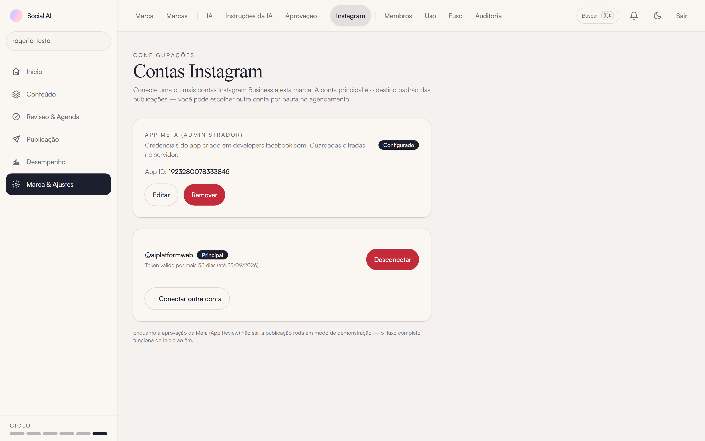
Figura 12. Conexão oficial com a Meta: conta do Instagram e credenciais do App (cifradas). Sem conexão, a publicação roda em modo de simulação — honesto e visível.
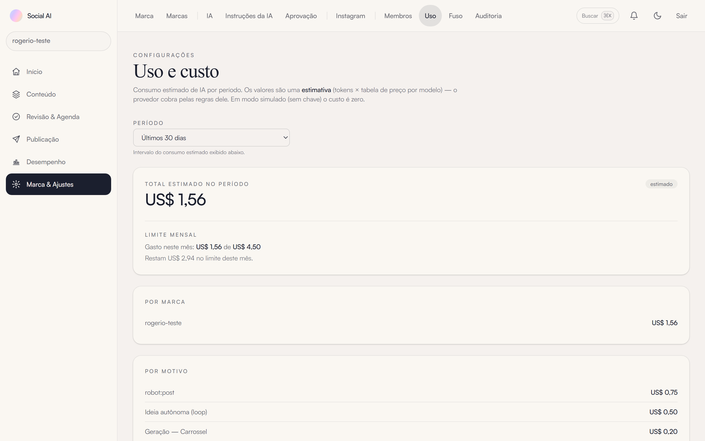
Figura 13. O gasto do mês contra o teto definido na Automação.
| Menu | Caminho | O que faz |
|---|---|---|
| Marcas | Múltiplas marcas no mesmo espaço — cada uma com pautas, peças e agenda próprias. | |
| Instruções da IA | Ajuste fino por agente: instruções suas somadas ao comportamento padrão, sem programar. | |
| Aprovação | Modo de aprovação padrão: sempre manual, ou automática sob nota mínima. | |
| Membros | Convites e papéis (Administrador / Membro). Só administradores veem credenciais. | |
| Fuso | Fuso horário e janela de publicação — todos os horários do robô usam este fuso. | |
| Auditoria | Trilha completa de ações, humanas e do robô — inclusive pausas por teto de gasto. |
A tela que transforma a plataforma de “assistente” em operação autônoma. Cada controle é uma salvaguarda: o robô só faz o que estes campos permitem.
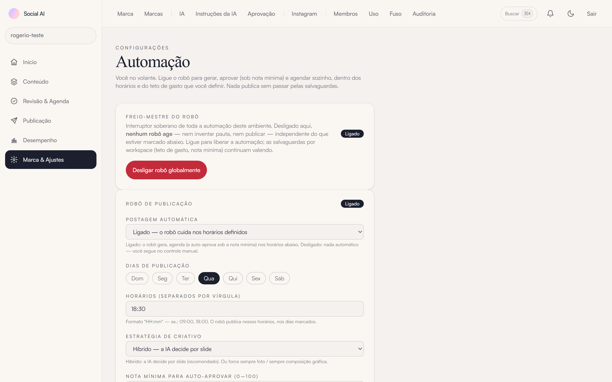
Figura 14. O painel do robô: freio-mestre no topo, depois a agenda e as salvaguardas.
| Controle | O que governa |
|---|---|
| Freio-mestre do robô | O interruptor soberano de toda a automação. Desligado, nenhum robô age — nem inventa pauta, nem publica — independente do resto. Opt-in explícito. |
| Postagem automática | Liga o robô desta marca: gerar, aprovar (sob nota mínima) e agendar nos horários definidos. Desligado = você segue no controle manual. |
| Dias de publicação | Os dias da semana em que o robô age. Dia desmarcado = robô parado naquele dia. |
| Horários | Os horários-alvo, no seu fuso, separados por vírgula (ex.: 09:00, 18:30).
Funcionam como “a partir de”: se a plataforma estiver hibernando no minuto
exato, o robô recupera o horário ainda no mesmo dia — nunca pula em silêncio. |
| Estratégia de criativo | A direção visual: Híbrido (a IA decide por slide — recomendado), sempre foto, ou sempre composição gráfica. |
| Nota mínima para auto-aprovar | Peça com nota igual ou acima publica sem revisão humana; abaixo, entra em Aprovações. É a sua régua de qualidade (0–100). |
| Gerações por dia | Teto de peças criadas por dia, independente de quantos horários existam. Fecha a porta a surpresa de fatura. |
| Teto de gasto mensal (USD) | Estourou, o robô pausa — e registra na Auditoria. O gasto corrente aparece em Uso. |
| Inventar pauta quando a fila esvaziar | Com o backlog vazio, o robô cria a próxima pauta a partir do perfil da marca. Pautas suas sempre vêm primeiro. |
O caminho completo de uma peça autônoma, com as telas deste guia no papel de cada etapa:
Confere a agenda (Automação): dia marcado + horário atingido. Horário perdido é recuperado no mesmo dia.
Teto de gerações do dia e teto de gasto do mês (Automação / Uso). Limite estourado = não gera, com registro na Auditoria.
A melhor pauta da fila (Pautas) — prioridade alta primeiro, evitando repetir temas recentes. Fila vazia? Inventa uma pauta do perfil da marca (Marca).
A mesma fábrica de 6 agentes do menu Gerar, com o resumo de aprendizado (Insights) embutido no briefing.
Nota ≥ mínima (Automação): publica imediatamente. Abaixo: entra em Aprovações e espera você.
O envio aparece no Calendário (e em Publicação, se falhar). As métricas viram os padrões de Insights — que melhoram a próxima peça. O ciclo fecha.